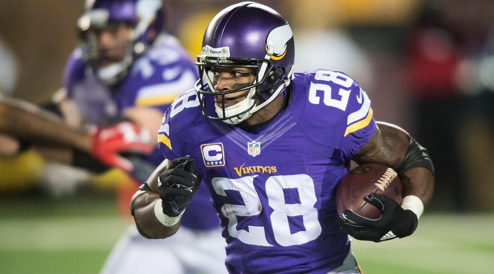

Adrian Peterson will go down as one of the greatest Minnesota Vikings of all time. His contributions to the team both on and off the feild were tremendous. His quickness on his feet is some of the fastest the NFL has ever seen, and has historic numbers. In one season, he even came close to breaking the single season rushing yards record. However, he currently is not on the Viking's roster, as injury started to plague his career, and ultimatelly affect his playing style. Eventually the Vikings would find a replacement back for the forseeable future in Dalvin Cook through the 2017 draft, but Peterson's legacy will forever live in Minnesota fan's hearts.
In the 2012 regular season, Adrian Peterson almost broke the single season rushing yards record of 2,105 yards set by Eric Dickerson in 1984. Peterson finished just under that mark at 2,097 yards, only needing 8 more to put his name in the history books. He finished the season with a whopping 6 yards per carry, and 12 touchdowns. He finished 400 yards ahead of the next most productive runner in the league that year.
After Peterson had spent his first 10 years in the National Football League with the Minnesota Viings, the 32 year old was traded to the New Orleanes Saints. He signed a contract that would pay him 3 million dollars thatyear playing in New Orleans, but he was unhappy with his role on the team. Later on that year, Peterson was traded yet again to the Arizona Cardinals, where he seemed to shine much more in red than he did in tan. He finished the 2017-2018 season in Arizona, playing 6 games for the Cardinals.